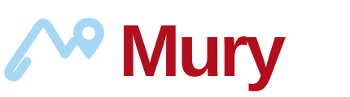
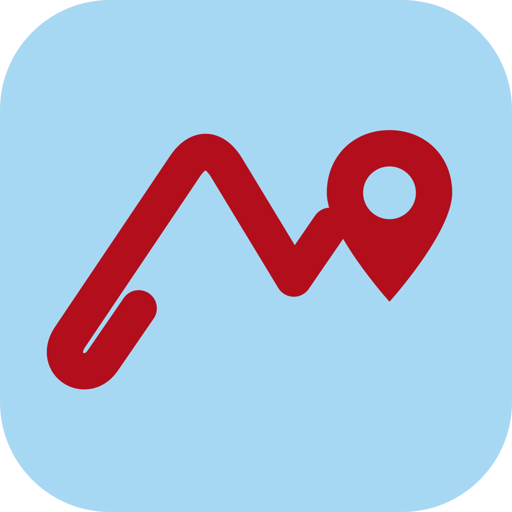

Route-shaped M, location pin and a bold, readable wordmark.


One mark, one identity. Blue is the supporting colour; red carries action and route emphasis.
A single blue-and-red identity in both light and dark appearance.
White on red: 6.76:1. Charcoal on blue: 9.62:1. Plain blood-red text on charcoal is 2.08:1, so dark controls use blue or white for readable labels.